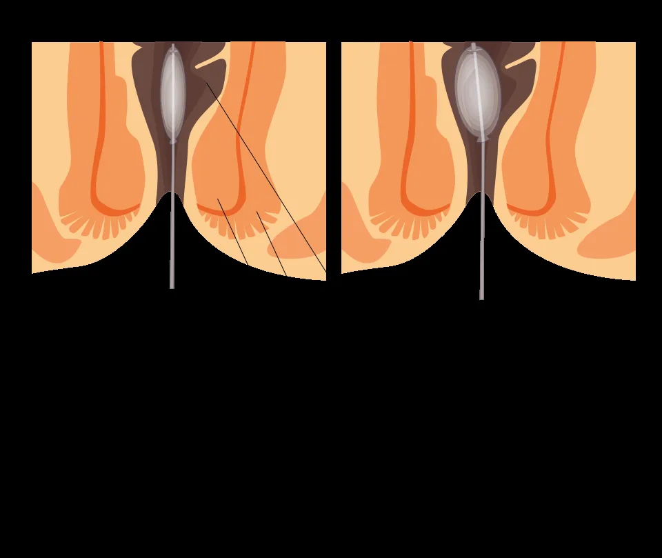
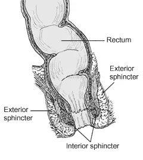
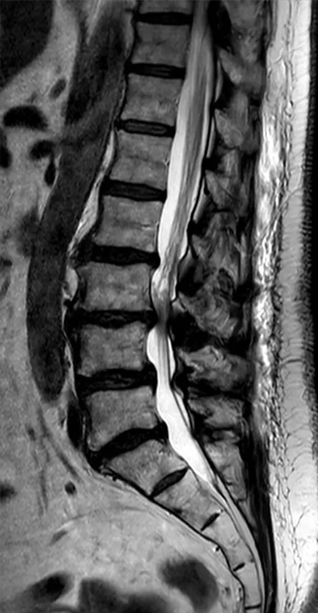
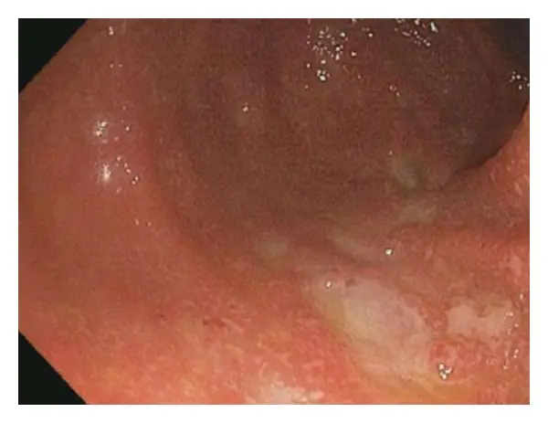

Incontinence anale
Du gaz qui s’échappe à la selle perdue : reconnaître la compression des racines sacrées, nommer la cause fréquente, traiter par paliers
Dix diagnostics différentiels, du plus fréquent au plus rare
- DX.1 — lésion obstétricale du sphincter 25 % est la cause de loin la plus fréquente : 25 % des accouchées ont des troubles transitoires, et 4 % gardent des symptômes[3].
- DX.2 — regorgement sur fécalome se place au 2e rang : la revue lausannoise le décrit comme une entité à part, fréquente chez le sujet âgé constipé[3].
- DX.3 — diarrhée chronique arrive au 3e rang ; chez le sujet âgé, la consistance altérée des selles reste la cause la plus fréquente[2].
- DX.4 — lésion sphinctérienne iatrogène occupe le 4e rang, parmi les traumatismes chirurgicaux que la revue lausannoise range avec l’accouchement[3].
- DX.5 — prolapsus rectal tient le 5e rang, comme cause anatomique principale qui étire aussi les nerfs à chaque poussée[2].
- DX.6 — dégénérescence du sphincter interne vient au 6e rang, parmi les causes anatomiques principales de la revue de 2009[3].
- DX.7 — atteinte neurologique chronique se range au 7e rang, car démence, accident vasculaire cérébral (AVC), sclérose en plaques et diabète augmentent le risque[4].
- DX.8 — colite aiguë sévère 🚩 E2 mégacôlon toxique figure au 8e rang, parmi les diarrhées infectieuses ou inflammatoires qui débordent la continence[2].
- DX.9 — cancer du rectum 🚩 E3 néoplasie méconnue se place au 9e rang, comme obstruction rectale qui provoque une fuite autour de la masse[2].
- DX.10 — syndrome de la queue de cheval 🚩 E1 compression des racines sacrées 0,04 % est rare : 0,04 % des patients lombalgiques, mais chaque cas impose une chirurgie immédiate[1].
| Diagnostic | Signe clé | Examen qui tranche | Mécanisme | Conduite immédiate | Rang E |
|---|---|---|---|---|---|
| DX.1 — lésion obstétricale du sphincter | La fuite suit un accouchement, parfois des années plus tard. | L’échographie endo-anale montre la brèche du sphincter externe. | La déchirure ou l’étirement du nerf honteux affaiblit la contraction. | On corrige d’abord la consistance des selles, puis on propose le biofeedback. | Aucun rang E. |
| DX.2 — regorgement sur fécalome | Des selles molles fuient après plusieurs jours de constipation. | Le toucher rectal trouve le fécalome. | La stase distend le rectum et la poussée étire les nerfs honteux. | On évacue le rectum et l’on évite tout ralentisseur du transit. | Aucun rang E. |
| DX.3 — diarrhée chronique | Les selles restent liquides depuis des semaines. | La biologie et la culture des selles cherchent la cause. | Le volume liquide dépasse une retenue encore normale. | On traite la cause, puis on épaissit les selles. | Aucun rang E. |
| DX.4 — lésion sphinctérienne iatrogène | La fuite apparaît après une fistulectomie, une hémorroïdectomie ou une sphinctérotomie. | L’échographie endo-anale localise la section. | Le muscle sectionné ne ferme plus le canal. | On mesure la brèche avant de discuter réparation ou stimulation. | Aucun rang E. |
| DX.5 — prolapsus rectal | Une rosette rouge sort à la toux ou à la poussée. | L’examen debout, en poussée, la montre. | Le rectum extériorisé ouvre le canal et étire les nerfs. | On adresse au chirurgien pour corriger le prolapsus. | Aucun rang E. |
| DX.6 — dégénérescence du sphincter interne | Le patient âgé découvre des traces sans avoir senti le besoin. | Le tonus de repos est faible au doigt, puis à la manométrie. | Le muscle lisse ne maintient plus la fermeture de repos. | On discute un agent expanseur, en annonçant le risque infectieux. | Aucun rang E. |
| DX.7 — atteinte neurologique chronique | Une démence, un AVC, une sclérose en plaques ou un diabète précèdent la fuite. | L’examen neurologique et le réflexe anal orientent. | La commande motrice ou la sensibilité rectale est altérée. | On fixe des selles à heure régulière et l’on adapte l’aide. | Aucun rang E. |
| DX.8 — colite aiguë sévère | La diarrhée est fébrile, muco-sanguinolente, d’apparition brutale. | La coproculture et l’endoscopie montrent la muqueuse ulcérée. | La muqueuse inflammée emporte la retenue par le volume et l’urgence. | On renonce au lopéramide et l’on adresse vite au spécialiste. | E2. |
| DX.9 — cancer du rectum | Une fuite nouvelle chez l’adulte s’accompagne d’une masse au toucher. | La coloscopie avec biopsie tranche. | La tumeur obstrue le rectum et déborde la continence. | On adresse pour un traitement selon les recommandations oncologiques. | E3. |
| DX.10 — syndrome de la queue de cheval | Rétention urinaire, anesthésie en selle et faiblesse des jambes s’installent vite. | L’IRM lombosacrée est l’imagerie de choix[1]. | La compression des racines sacrées coupe la commande du plancher. | On adresse immédiatement en neurochirurgie. | E1. |
1. Définition et sémantique
Trois formes cliniques
Ce que le symptôme n’est pas
2. Épidémiologie
| Population | Prévalence | Source et année |
|---|---|---|
| Population suisse globale | 10,3 % | Revue médicale suisse, 2009 et 2024 |
| Médiane de 38 études | 7,7 % (2 à 21 %) | Revue médicale suisse, 2024 |
| Population générale française | 5,1 % | Revue médicale suisse, 2009 |
| Enfants | 1,5 % | Revue médicale suisse, 2009 |
| Pensionnaires d’institution | 50 % ou davantage | Revue médicale suisse, 2009 et 2024 |
| Femmes après un accouchement | 25 % transitoire, 4 % persistant | Revue médicale suisse, 2009 |
Groupes à risque
Sous-déclaration et poids social
3. Physiopathologie
Le sphincter interne, verrou de repos
Le sphincter externe, contraction volontaire
Le nerf honteux, victime de l’étirement
Le réservoir, la sensibilité et la coordination
La chaîne du regorgement
| Perturbation | Ce qui la montre | Correction logique |
|---|---|---|
| Tonus de repos bas (sphincter interne) | Le doigt, puis la manométrie, mesurent une fermeture de repos faible. | Le lopéramide renforce le tonus ; un agent expanseur se discute si l’atteinte reste modérée. |
| Contraction volontaire faible (sphincter externe) | La contraction volontaire au doigt et à la manométrie reste brève ou faible. | Le biofeedback entraîne la contraction ; une brèche large relève de la sphinctéroplastie. |
| Brèche sphinctérienne | L’échographie endo-anale situe la solution de continuité sur le cadran horaire. | La reconstruction passe d’abord si le délabrement est important. |
| Dénervation pudendale | Le réflexe anal manque ; la latence du nerf honteux s’allonge. | On supprime les efforts de poussée ; la stimulation sacrée se discute. |
| Hyposensibilité rectale | La manométrie montre un seuil de perception élevé. | Le biofeedback et des selles à heure fixe compensent. |
| Stase fécale | Le toucher trouve un fécalome. | On évacue et l’on prescrit des laxatifs avec prudence. |
| Dyssynergie | La poussée au doigt ne relâche pas l’anus ; le périnée descend de 3 cm ou plus. | La rééducation de la coordination vise la vidange complète. |
4. Démarche diagnostique et exclusion des urgences
| Étape | Élément qui tranche | Piège à éviter | Conduite si positif |
|---|---|---|---|
| 🚩 E1 — queue de cheval | Rétention urinaire, présente dans près de 90 % des cas[1]. | Mettre la fuite sur le compte d’une simple lombalgie. | On demande l’IRM et l’avis neurochirurgical sans attendre. |
| 🚩 E2 — colite aiguë sévère | Fièvre élevée et selles muco-sanguinolentes. | Calmer la diarrhée par lopéramide. | On fait la coproculture et l’on oriente vers le spécialiste. |
| 🚩 E3 — cancer du rectum | Masse au toucher ou fuite nouvelle inexpliquée. | Attribuer une fuite récente à l’âge. | On programme la coloscopie avec biopsie. |
| Lésion obstétricale | Accouchement antérieur, brèche à l’échographie. | Croire qu’une césarienne exclut la cause. | On commence par la première ligne, puis le biofeedback. |
| Regorgement | Fécalome au doigt, récit de « rupture de barrage ». | Prendre la pseudo-diarrhée pour une vraie diarrhée. | On évacue, puis on traite la constipation. |
5. Anamnèse ciblée
| Drapeau | Signification | Action |
|---|---|---|
| 🚩 Rétention urinaire, anesthésie en selle, faiblesse des jambes | Compression de la queue de cheval (E1). | On obtient l’IRM et l’avis neurochirurgical en urgence[1]. |
| 🚩 Diarrhée fébrile, muco-sanguinolente | Dysenterie ou colite aiguë (E2). | On ne donne pas de lopéramide et l’on cherche le germe. |
| 🚩 Diarrhée après antibiotiques à large spectre | Colite pseudomembraneuse possible. | On renonce au lopéramide et l’on cherche la cause. |
| 🚩 Fuite nouvelle avec masse au toucher | Néoplasie rectale (E3). | On programme la coloscopie avec biopsie. |
| Constipation ancienne puis « rupture de barrage » | Impaction fécale. | On fait le toucher rectal et l’on évacue le rectum. |
6. Examen clinique, région par région
État général, cognition et fonction
Abdomen et périnée
Toucher rectal
Examen neurologique et rachis
7. Syndromes
7.1 Syndrome d’incontinence par urgence
7.2 Syndrome d’incontinence passive
7.3 Syndrome de regorgement
7.4 Syndrome de compression de la queue de cheval
7.5 Syndrome dysentérique
| Syndrome | Signes fonctionnels | Signes physiques |
|---|---|---|
| 7.1 Urgence | Besoin pressant, fuite avant d’atteindre les toilettes. | Contraction volontaire faible ; brèche du sphincter externe à l’échographie. |
| 7.2 Passive | Traces découvertes sans avoir senti le besoin. | Tonus de repos bas, anus parfois béant, sensibilité rectale émoussée. |
| 7.3 Regorgement | Constipation de plusieurs jours, puis selles molles. | Fécalome au toucher, selles résiduelles à la marge. |
| 7.4 Queue de cheval | Rétention urinaire, faiblesse des jambes, lombalgie. | Anesthésie en selle, réflexe anal aboli, parésie. |
| 7.5 Dysentérique | Diarrhée brutale, glaires et sang. | Fièvre élevée ; muqueuse ulcérée en endoscopie. |
8. Diagnostic positif et critères
| Critère | Source et année | Ce qui suffit | Ce qui ne suffit pas |
|---|---|---|---|
| Incontinence fécale | Revue médicale suisse, 2009 | Perte involontaire de selles, plus de trois mois, après quatre ans[5]. | Une diarrhée sans fuite. |
| Incontinence anale | Revue médicale suisse, 2009 et 2024 | Perte involontaire de gaz ou de mucus, en plus des selles. | Un inconfort sans perte. |
| Rome IV | Revue médicale suisse, 2024 | Au moins trois mois de pertes[6]. | Un épisode isolé au cours d’une gastro-entérite. |
| Implantation après test de stimulation | Revue médicale suisse, 2007 | Au moins 50 % de baisse des accidents ou d’amélioration du score. | Ce seuil seul en cas d’impériosités. |
| Neuromodulation sacrée remboursée | SSSNM 2021, OPAS 2025 | Échec documenté d’au moins 3 mois de traitement conservateur. | Un traitement de première ligne. |
9. Examens complémentaires
9.a Examen de référence


9.b Examens de première intention

Sur le cliché brut, le liquide céphalorachidien apparaît blanc et entoure les racines, qui forment des traits sombres.
La copie annotée porte trois repères numérotés, lus dans l’ordre ci-dessous.
- Le premier repère marque le niveau où le sac dural se rétrécit.
- Le deuxième repère suit, sous ce niveau, des racines allongées et sinueuses, dites redondantes.
- Le troisième repère pose un corps vertébral comme point de comptage des niveaux.
Piège. Ce cliché montre une sténose lombaire ancienne ; l’urgence, en revanche, se reconnaît à la rétention urinaire et à l’anesthésie en selle[1].
Ce que l’image décide : une compression des racines sacrées, chez un patient retenant ses urines, classe le cas en E1 et impose la chirurgie sans délai[1]. Si le canal est libre, la recherche se tourne vers le rectum, où la coloscopie écarte E3, le cancer du rectum[16].
9.c Alternatives
9.d Examens de seconde intention

Sur le cliché brut, la muqueuse est rouge et granuleuse, sans le fin réseau de vaisseaux d’une paroi saine.
La copie annotée montre trois repères sur la muqueuse et la lumière.
- Le premier repère montre une muqueuse rouge qui a perdu son réseau vasculaire : l’inflammation est diffuse.
- Le deuxième repère se pose sur une plage pâle et creusée, c’est-à-dire une ulcération.
- Le troisième repère montre une lumière ouverte, sans masse qui l’obstrue.
Piège. Ce cliché provient d’une colite médicamenteuse, si bien qu’il illustre la colite aiguë, où le lopéramide est proscrit en thérapie primaire[15].
Ce que l’image décide : une muqueuse ulcérée sans masse range la fuite en E2, la colite aiguë sévère, et interdit de commencer par le lopéramide[15]. Si une masse apparaissait, elle orienterait au contraire vers E3, le cancer du rectum, à traiter selon les recommandations[12].
| Résultat | Signification | Conduite |
|---|---|---|
| Brèche du sphincter externe entre 12 et 2 heures | Lésion obstétricale typique. | Biofeedback ; réparation si le délabrement est important. |
| Lésion du sphincter interne entre 3 et 8 heures | Séquelle d’une sphinctérotomie latérale interne. | Agent expanseur si l’insuffisance reste modérée. |
| Contraction volontaire faible à la manométrie | Faiblesse du sphincter externe. | Biofeedback en première intention. |
| Descente périnéale de 3 cm ou plus | Périnée descendant. | Rééducation ; suppression des efforts de poussée. |
| Compression des racines à l’IRM | Queue de cheval (E1). | Décompression chirurgicale immédiate[1]. |
| Muqueuse ulcérée sans masse | Colite aiguë (E2). | Pas de lopéramide ; traitement de la cause. |
| Masse rectale | Cancer du rectum (E3). | Biopsie, puis traitement oncologique. |
10. Arbre décisionnel
- 🚩 Si rétention urinaire, anesthésie en selle ou faiblesse des jambes → E1, queue de cheval : l’IRM lombosacrée confirme la compression, puis la décompression chirurgicale suit sans délai[1].
- 🚩 Sinon, si diarrhée fébrile ou muco-sanguinolente → E2, colite aiguë sévère : aucun lopéramide, bilan de la cause[15].
- 🚩 Sinon, si fuite nouvelle ou masse au toucher → E3, cancer du rectum : la coloscopie avec biopsie confirme ou écarte la tumeur[12].
- Si le toucher trouve un fécalome → regorgement : évacuation, puis fibres et laxatifs prudents[9].
- Si la diarrhée est chronique → glycémie, hormones thyroïdiennes, culture de selles, test respiratoire et recherche de maladie cœliaque[9].
- Sinon → première ligne : hydratation, fibres, éviction du lait, du chocolat et de la caféine, hygiène périnéale, lopéramide et biofeedback[13].
- Si l’échec persiste après au moins 3 mois de traitement conservateur documenté → avis spécialisé[17].
- Si le délabrement sphinctérien est important → reconstruction d’abord[13].
- Si l’insuffisance du sphincter interne reste modérée → agent expanseur[13].
- Si le plancher est intact → test de stimulation sacrée, puis implant en cas de gain suffisant[13].
- Si une option non chirurgicale est préférée → stimulation du nerf tibial, irrigation transanale ou tampons anaux[12].
- Si tout échoue chez un patient fragile → colostomie, qui améliore le confort et facilite les soins[9].
11. Prise en charge selon les recommandations suisses
11.A — Buts chiffrés
11.B — Moyens
| Médicament | Dose | Voie | Durée | Contre-indication majeure | Source |
|---|---|---|---|---|---|
| Imodium®, gélule de 2 mg (adulte, diarrhée chronique ou incontinence)[20] | Dose initiale 4 mg, puis 2 à 12 mg par jour ; maximum 16 mg par jour[20]. | Orale, avec un peu de liquide. | Jusqu’à une selle moulée 1 à 2 fois par jour ; arrêt si aucune selle pendant plus de 12 heures. | Contre-indiqué en cas d’insuffisance hépatique sévère, de dysenterie, de colite aiguë ou d’iléus. | Information professionnelle suisse, n° 40363 |
| Imodium® lingual, comprimé orodispersible de 2 mg (adulte)[20] | Même schéma : 4 mg, puis 2 à 12 mg par jour ; maximum 16 mg par jour[20]. | Sur la langue, sans liquide. | Même arrêt dès que les selles redeviennent normales. | Contre-indiqué avant 6 ans et en cas d’hypersensibilité ; contient de l’aspartame. | Information professionnelle suisse, n° 40363 |
| Imodium®, enfant de 6 à 12 ans | Dose initiale 2 mg, puis 2 à 6 mg par 20 kg ; maximum 6 mg par 20 kg[20]. | Orale. | Sans dépasser 8 gélules par jour. | Contre-indiqué avant 6 ans. | Information professionnelle suisse, n° 40363 |
Situations particulières
Volet social et assurances
11.C — Surveillance
11.D — Pronostic, guérison et sortie
- Critère de guérison : on obtient une selle moulée 1 à 2 fois par jour, et le journal ne note plus de fuite[20].
- Critère de succès d’un test de stimulation : le test réussit si les accidents baissent d’au moins 50 %, ou si le score de qualité de vie progresse d’autant[14].
- Critère de sortie du parcours aigu : on a écarté les causes graves, c’est-à-dire la queue de cheval, la colite aiguë et le cancer du rectum[12].
- Critère de suivi au long cours : contrôle annuel en centre agréé chez le patient implanté[14].
12. Prévention
Prévention primaire
Prévention secondaire
Prévention tertiaire
13. Points clés
- L’incontinence anale ajoute la perte de gaz à celle des selles ; la forme fécale exige plus de trois mois[5].
- 🚩 Rétention urinaire et anesthésie en selle imposent l’IRM et une chirurgie immédiate (E1)[1].
- La lésion obstétricale est de loin la cause la plus fréquente, sans protection complète par la césarienne[3].
- Le lopéramide est proscrit dans la dysenterie, la colite aiguë et la constipation[15].
- La neuromodulation sacrée est remboursée après échec documenté du traitement conservateur[21].
14. Pièges et questions fréquentes à l’examen fédéral suisse
| Question | Réponse | Raison |
|---|---|---|
| Une perte isolée de gaz est-elle une incontinence anale ? | Oui, mais pas une incontinence fécale. | L’incontinence anale inclut les gaz[5]. |
| Une césarienne exclut-elle la cause obstétricale ? | Non. | Elle ne protège pas complètement[3]. |
| Faut-il donner du lopéramide à un patient âgé qui « fuit » après des jours sans selles ? | Non : on évacue le fécalome. | La constipation impose d’arrêter le lopéramide[15]. |
| Quel signe fait suspecter une queue de cheval ? | La rétention urinaire. | Sa sensibilité approche 90 %[1]. |
| Quelle dose maximale de lopéramide chez l’adulte ? | 16 mg par jour, soit 8 gélules d’Imodium®[20]. | C’est la limite de l’information professionnelle, qui contre-indique l’insuffisance hépatique sévère[20]. |
| La stimulation sacrée est-elle un traitement de première ligne ? | Non, de deuxième ou troisième ligne. | Un traitement conservateur d’au moins 3 mois doit avoir échoué[17]. |
| Le lopéramide est-il permis pendant l’allaitement ? | Non. | Il passe dans le lait maternel[15]. |
Ce cours, lu seul avec ses fenêtres, suffit-il pour gagner 90 à 100 % des points sur ce sujet et pour traiter ce patient en sécurité ?
Sources
- [1] Revue médicale suisse, 2010, quand référer aux urgences un patient lombalgique, syndrome de la queue de cheval — https://www.revmed.ch/view/552677/4429383/RMS_idPAS_D_ISBN_pu2010-29s_sa05_art05.pdf (consulté le 11 novembre 2026).
- [2] Même revue, 2024, étiologies — https://archive-ouverte.unige.ch/unige:184359 (consulté le 11 novembre 2026).
- [3] Même revue, 2009, étiologie — https://www.revmed.ch/revue-medicale-suisse/2009/revue-medicale-suisse-209/prise-en-charge-actuelle-de-l-incontinence-anale (consulté le 11 novembre 2026).
- [4] Même revue, 2024, anamnèse — https://archive-ouverte.unige.ch/unige:184359 (consulté le 11 novembre 2026).
- [5] Même revue, 2009, définition — https://www.revmed.ch/revue-medicale-suisse/2009/revue-medicale-suisse-209/prise-en-charge-actuelle-de-l-incontinence-anale (consulté le 11 novembre 2026).
- [6] Revue médicale suisse, 2024, Hôpitaux universitaires de Genève, incontinence fécale de la personne âgée, définition et prévalence — https://archive-ouverte.unige.ch/unige:184359 (consulté le 11 novembre 2026).
- [7] Revue médicale suisse, 2009, Cerantola, Aellen et Givel, prise en charge actuelle de l’incontinence anale, fréquence — https://www.revmed.ch/revue-medicale-suisse/2009/revue-medicale-suisse-209/prise-en-charge-actuelle-de-l-incontinence-anale (consulté le 10 novembre 2026).
- [8] Même revue, 2009, épidémiologie — https://www.revmed.ch/revue-medicale-suisse/2009/revue-medicale-suisse-209/prise-en-charge-actuelle-de-l-incontinence-anale (consulté le 11 novembre 2026).
- [9] Même revue, 2009, physiopathologie, investigations et techniques — https://www.revmed.ch/revue-medicale-suisse/2009/revue-medicale-suisse-209/prise-en-charge-actuelle-de-l-incontinence-anale (consulté le 11 novembre 2026).
- [10] Même revue, 2024, examen clinique — https://archive-ouverte.unige.ch/unige:184359 (consulté le 11 novembre 2026).
- [11] Même information professionnelle, interactions, effets indésirables, surdosage et mécanisme — https://arzneimittelinfo.ch/fr/imodium-lingual-225012/information-professionnelle (consulté le 11 novembre 2026).
- [12] Même revue, 2024, examens et prise en charge — https://archive-ouverte.unige.ch/unige:184359 (consulté le 11 novembre 2026).
- [13] Même revue, 2009, traitement — https://www.revmed.ch/revue-medicale-suisse/2009/revue-medicale-suisse-209/prise-en-charge-actuelle-de-l-incontinence-anale (consulté le 10 novembre 2026).
- [14] Même revue, 2007, sélection, technique et suivi — https://www.revmed.ch/revue-medicale-suisse/2007/revue-medicale-suisse-117/la-stimulation-nerveuse-sacree-traitement-efficace-de-l-incontinence-fecale (consulté le 11 novembre 2026).
- [15] Même information professionnelle, contre-indications, précautions, grossesse et allaitement — https://arzneimittelinfo.ch/fr/imodium-lingual-225012/information-professionnelle (consulté le 11 novembre 2026).
- [16] Même revue, 2009, bilan — https://www.revmed.ch/revue-medicale-suisse/2009/revue-medicale-suisse-209/prise-en-charge-actuelle-de-l-incontinence-anale (consulté le 10 novembre 2026).
- [17] Swiss Society for Sacral Neuromodulation, lignes directrices, 30 septembre 2021 — https://www.sssnm.ch/wp-content/uploads/richtlinien_fr.pdf (consulté le 11 novembre 2026).
- [18] Revue médicale suisse, 2007, stimulation nerveuse sacrée, indication — https://www.revmed.ch/revue-medicale-suisse/2007/revue-medicale-suisse-117/la-stimulation-nerveuse-sacree-traitement-efficace-de-l-incontinence-fecale (consulté le 10 novembre 2026).
- [19] Même revue, 2007, examens et résultats — https://www.revmed.ch/revue-medicale-suisse/2007/revue-medicale-suisse-117/la-stimulation-nerveuse-sacree-traitement-efficace-de-l-incontinence-fecale (consulté le 10 novembre 2026).
- [20] Imodium®/Imodium® lingual, information professionnelle suisse (AIPS), n° 40363, état 12/2025, posologie — https://arzneimittelinfo.ch/fr/imodium-lingual-225012/information-professionnelle (consulté le 11 novembre 2026).
- [21] OFSP, OPAS annexe 1, état au 1er juillet 2025, électroneuromodulation sacrée et tibiale — https://www.bag.admin.ch/dam/fr/sd-web/1ybhiBuS162K/OPAS_Annexe%201_pour%20le%201.7.2025.pdf (consulté le 11 novembre 2026).